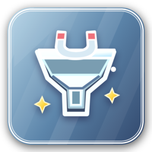

NewAutopickup
Recoge items automáticamente (pendiente de desarrollo).
Resumen
Proyecto base para un plugin de auto-recogida de items. Actualmente es solo un esqueleto: la clase principal no ejecuta ninguna lógica al habilitar o deshabilitar, y no incluye comandos, permisos, configuración ni listeners. Está pensado como punto de partida para implementar la funcionalidad de autopickup.
- Estructura base para un plugin de autopickup
- Clase principal vacía (onEnable/onDisable sin lógica)
- Sin comandos, permisos ni config.yml
- Compilado contra Paper 1.18.2 (api-version 1.18)
Instalación paso a paso
- Descarga el
.jardel plugin y colócalo en la carpetaplugins/de tu servidor o proxy. - Instala las dependencias que uses de la lista de requisitos.
- Reinicia el servidor (o ejecuta
/reload confirm) para que el plugin arranque. - Configura el plugin desde su
config.ymly sus archivos de datos. - Usa el comando de recarga del plugin para aplicar cambios sin reiniciar.
Hooks e integraciones
El plugin se conecta solo con estos plugins cuando están instalados en tu servidor.
Sin hooks: funciona por sí solo, sin dependencias externas.
Archivos de configuración
Todos los archivos .yml que trae el plugin, tal cual vienen en el código fuente. Pulsa uno para verlo, copiarlo o descargarlo.
Los archivos se muestran con sus valores por defecto: cópialos o descárgalos y edítalos en la carpeta plugins/ de tu servidor.